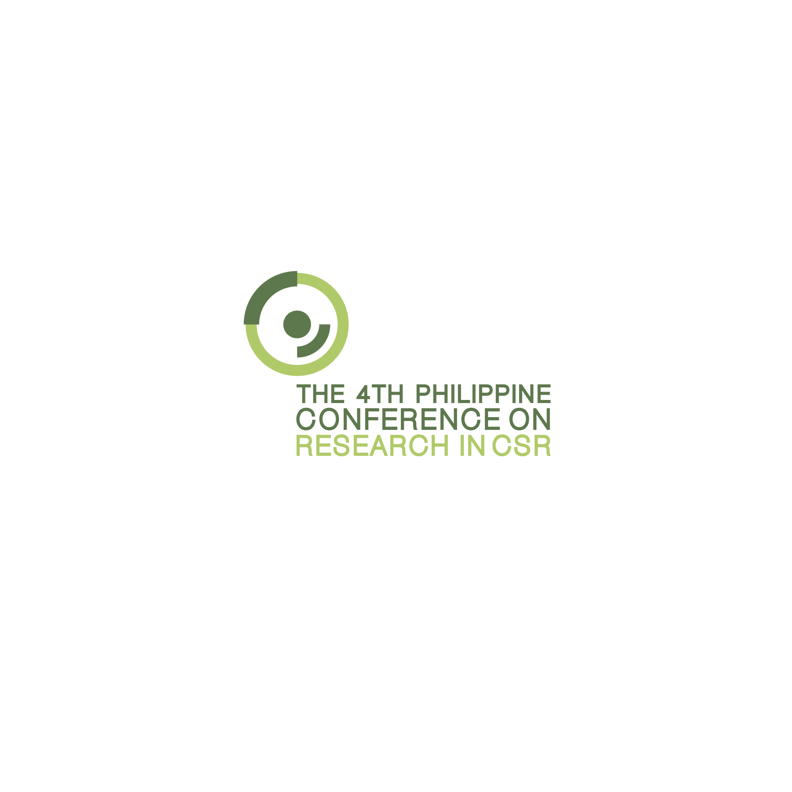

The Conference organized by the — and, concomitantly, its logo — is all about human dignity. The circle reflects that dignity is innate in man, he who has intrinsic worth. Such is the case because we are created in God’s image, symbolized by the dark green above the person’s head. Green is also the color of BCYF, and is a symbol of vitality and growth - the potential in anyone and everyone wishing to live a CSR 3.0 life.